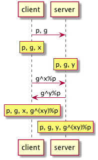

Openssl
Table of Contents
1 基本知识
1.1 openssl 组成
- libcrypto: 加密库
- libssl: TLS/SSL 实现
- openssl: 命令行工具
1.2 编码格式
目前有以下两种编码格式：
1.2.1 PEM - Privacy Enhanced Mail
文本格式，以 -----BEGIN----- 开头， -----END----- 结尾，内容是 Base64 编码。
Unix服务器偏向于使用这种编码格式。
1.2.2 DER - Distinguished Encoding Rules
二进制格式不可读。
Java 和 Windows 服务器偏向于使用这种编码格式。
1.3 X509 格式
内容包含：
- 公钥及其有效期
- 证书合法拥有者
- 证书该如何被使用 （用来签名或是用来加密）
- CA 的信息
- CA 的签名
1.4 Diffie-Hellman 交换过程
p：大素数；g：生成数；x：clnt_random；y：srv_random


1.5 算法种类
1.5.1 对称加密
1.5.1.1 DES
是一种使用密钥加密的块算法，区块长度为 56 比特。
1976 年被美国联邦政府的国家标准局确定为联邦资料处理标准（FIPS），随后在国际上广泛流传开来。
单密钥算法,是信息的发送方采用密钥 A 进行数据加密，信息的接收方采用同一个密钥 A 进行数据解密。
1.5.1.2 AES
AES 的区块长度固定为 128 比特，密钥长度则可以是 128 ，192 或 256 比特。
AES 是美国国家标准技术研究所 NIST 旨在取代 DES 的 21 世纪的加密标准。
1.5.2 非对称加密
1.5.2.1 RSA
RSA 是目前最有影响力的公钥加密算法，它能够抵抗到目前为止已知的绝大多数密码攻击，已被 ISO 推荐为公钥数据加密标准。
在 RSA 算法中，对于一个已经生成的私钥来说，它的长度决定了密文的长度， 比如，1024参数生成的密钥加密一段明文数据后，得到的密文长度换算为字节长度是 1024/8 = 128， 形象一点，是128个英文字母的长度，这是固定的。 也就是说，无论明文数据长度是多少，用这个密钥加密生成的密文总是也是最大有 128 个字节那么长，这是由算法本身决定的。
当明文数据超过 128 个字节时，使用这个密钥加密，只有前128字节的数据被加密了，其余的会被舍弃， 这种情况下，加密后的密文是无法解密还原为之前的明文的，算法会报错 。
实际上，RSA 算法规定密文需要 11 字节冗余，因此，最大可加密明文长度应该是 1024/8 - 11 = 117，即明文不能超过117字节。
所以，在使用RSA算法时，需要评估一下你的明文数据，测量明文数据长度，留出冗余度，再决定需要多长的密钥， 从而生成正确的满足需求的密钥对。
可以意料到，因为算法的复杂，RSA 加解密的开销代价是很大的，加解密的耗时，会随着密钥长度的增长及明文长度增长而比例增长， 因此，RSA 算法 更适合用于微量数据的加解密 。
1.5.2.2 DSA
一般用于数字签名和认证，在DSA数字签名和认证中，发送者使用自己的私钥对文件或消息进行签名， 接受者收到消息后使用发送者的公钥来验证签名的真实性。
DSA 只是一种算法，和 RSA 不同之处在于 它不能用作加密和解密，也不能进行密钥交换，只用于签名 ，它比 RSA 要快很多。
1.5.2.3 ECC
基于椭圆曲线算法。
ECC 与 RSA 相比，有以下的优点：
- 相同密钥长度下，安全性能更高
- 计算量小，处理速度快，在私钥的处理速度上（解密和签名），ECC远比 RSA，DSA 快得多
- 存储空间占用小
2 常见用法
2.1 工具命令
2.1.1 查看支持的 Cipher Suite
openssl ciphers -V | column -t
2.1.2 使用算法加解密 (openssl enc)
-in <file> 输入文件 -out <file> 输出文件 -pass <arg> 密码 -S 加盐加密 -e 加密操作 -d 解密操作 -a/-base64 是否将结果base64编码 -md 指定密钥生成的摘要算法 默认MD5
2.1.2.1 支持的算法
openssl enc -ciphers
2.1.2.2 加密
openssl enc -des3 -a -in <data.txt> -out <data.des3>
不同的密码输入方式：
# 命令行输入，密码123456 openssl enc -aes-128-cbc -in plain.txt -out out.txt -pass pass:123456 # 文件输入，密码123456 echo 123456 > passwd.txt openssl enc -aes-128-cbc -in plain.txt -out out.txt -pass file:passwd.txt # 环境变量输入，密码123456 passwd=123456 export passwd openssl enc -aes-128-cbc -in plain.txt -out out.txt -pass env:passwd # 从文件描述符输入 openssl enc -aes-128-cbc -in plain.txt -out out.txt -pass fd:1 # 从标准输入输入 openssl enc -aes-128-cbc -in plain.txt -out out.txt -pass stdin
2.1.2.3 解密
openssl enc -des3 -d -a -in <data.des3> -out <data_decrypted.txt>
2.1.3 计算文件摘要（指纹）
openssl dgst -md5 <filename>
2.1.4 生成随机密码串
openssl passwd -1 -salt <saltvalue>
-1 表示 MD5-Based Password algorithm
2.1.5 查看版本编译信息
openssl version -a
OpenSSL 0.9.8zh 14 Jan 2016 built on: Jan 23 2017 platform: darwin64-x86_64-llvm options: bn(64,64) md2(int) rc4(ptr,char) des(idx,cisc,16,int) blowfish(idx) compiler: -arch x86_64 -fmessage-length=0 -pipe -Wno-trigraphs -fpascal-strings -fasm-blocks -O3 -D_REENTRANT -DDSO_DLFCN -DHAVE_DLFCN_H -DL_ENDIAN -DMD32_REG_T=int -DOPENSSL_NO_IDEA -DOPENSSL_PIC -DOPENSSL_THREADS -DZLIB -mmacosx-version-min=10.6 OPENSSLDIR: "/System/Library/OpenSSL"
2.1.6 查询可用子命令
openssl ?
2.1.7 测试各种加密算法的速度
openssl speed [ciphername]
2.2 RSA 密钥对
2.2.1 密钥生成
2.2.1.1 生成私钥
openssl genrsa -out <key.pem> 2048 # 指定私钥长度为 2048 比特，默认是 512 比特，但 512 比特长度在现今技术环境下已不够安全， # 在被攻击的情况下，这个长度的密钥容易被黑客推算还原，可以使用 512 的整数倍值，推荐使用2048， # 这个长度的密钥已经相对安全可靠。
openssl genrsa -aes128 -out <key.pem> 2048 # 将私钥以 AES-128 算法保护
2.2.1.2 从私钥中提取公钥
openssl rsa -in <key.pem> -pubout -out <pubkey.pem>
2.2.1.3 从证书中提取公钥
openssl x509 -pubkey -noout -in <cert.pem> > <pubkey.pem>
2.2.2 使用密钥对加解密
两次加密生成密文是不一样的，这也是 RSA 加密算法的优势体现，密文是动态的。
2.2.2.1 公钥加密
openssl rsautl -encrypt -in <data.txt> -inkey <pubkey.pem> -pubin -out <data_encrypted.txt> # 加密时，默认导入的密钥是私钥，所以，公钥加密需要加上 -pubin 参数以表明加密操作是以公钥进行
2.2.2.2 私钥解密
openssl rsautl -decrypt -in <data_encrypted.txt> -inkey <key.pem> -out <data_decrypted.txt>
2.2.3 签名(sign)与验证(verify)
使用 RSA 密钥进行签名，实际上就是使用私钥进行加密，只是算法不同，加密对象一般是摘要。
使用 RSA 密钥进行验证，实际上就是使用公钥进行解密。
rsautl -sign 和 rsautl -encrypt 区别：
"rsautl -encrypt" and "rsautl -sign" commands use different flavors of PKCS#1 v1.5 padding: "rsautl -encrypt" uses 0x02 as the BT (Block Type) and random bytes as padding string. "rsautl -sign" uses 0x01 as the BT (Block Type) and 0xff bytes as padding string. So if we are using no padding, the only difference between "rsautl -encrypt" and "rsautl -sign" commands is what type of RSA keys they taking. In other words, "rsautl -encrypt -raw" and "rsautl -sign -raw" are identical commands except that the first takes RSA public keys and the second takes RSA private keys.
2.2.3.1 签名
openssl rsautl -sign -in <digest.txt> -inkey key.pem -out <sig.txt>
2.2.3.2 验证
openssl rsautl -verify -in <sig.txt> -inkey key.pem -out <digest.txt> # 或 openssl rsautl -verify -in <sig.txt> -inkey pub.pem -pubin -out <digest.txt>
2.3 制作自签署证书
自签署证书一般作为 CA 的证书，普通的证书由 CA 来签署，也可以按照该步骤制作自签署的普通证书（将自身作为 CA ）：
2.3.1 第一步：生成密钥
openssl genrsa 2048 >ca.key.pem ## 生成 2048 位私钥
2.3.2 第二步：生成自签署证书
openssl req -new -x509 -key ca.key.pem -out ca.cert.pem -days 365
2.4 查看证书内容
openssl x509 -text -in cert.pem
2.5 签署证书
2.5.1 第一步：部署 CA 证书
mkdir -p $CATOP/private ## $CATOP: ./demoCA cp ca.key.pem $CATOP/private/cakey.pem cp ca.cert.pem $CATOP/cacert.pem
2.5.2 第二步：生成 csr
openssl req -new -key webserver.key -out webserver.csr
2.5.3 第三步：签署 csr
openssl ca -in webserver.csr -out webserver.crt
2.5.4 自动化脚本（可设置证书的有效日期）
#!/usr/bin/env bash # -*- coding: utf-8 -*- CATOP=./demoCA rm -rf $CATOP mkdir -p $CATOP/certs # mkdir -p $CATOP/crl # 存放 Certificate Revoke List mkdir -p $CATOP/newcerts # 存放证书 mkdir -p $CATOP/private # 存放 CA private key touch $CATOP/index.txt # CA log file openssl genrsa -out usc.key.pem 2048 openssl req -new -key usc.key.pem -out usc.csr.pem \ -subj "/C=US/ST=Califomia/L=Irvine\ /O=Cisco Systems, Inc./OU=Cisco Small Business/CN=Network Orchestrator" openssl ca -selfsign -keyfile usc.key.pem -startdate 20160901000000Z \ -days 7300 -batch -in usc.csr.pem -out usc.cert.pem -create_serial rm -rf demoCA
2.6 证书格式转换
PEM 格式分为 PKCS#1 和 PKCS#8 ：
| Format | Type | Header |
|---|---|---|
| PKCS#1 | RSAPublicKey | BEGIN RSA PUBLIC KEY |
| PKCS#1 | RSAPrivateKey | BEGIN RSA PRIVATE KEY |
| PKCS#8 | PrivateKeyInfo | BEGIN PRIVATE KEY |
| PKCS#8 | RSAPublicKey | BEGIN PUBLIC KEY |
| PKCS#8 | EncryptedPrivateKeyInfo | BEGIN ENCRYPTED PRIVATE KEY |
2.6.1 PKCS#1 => PKCS#8
openssl 的 genpkey 指令会生成 PKCS#8 格式，而 genrsa 会生成 PKCS#1 格式。
2.6.1.1 私钥
openssl pkcs8 -topk8 -inform pem -in key.pem -outform pem -nocrypt -out key.pkcs8.pem
2.6.1.2 公钥
openssl rsa -RSAPublicKey_in -in public_pkcs1.pem -out public_pkcs8.pem
2.6.2 PKCS#8 => PKCS#1
2.6.2.1 私钥
openssl pkcs8 -in private_pkcs8.pem -nocrypt -out private_pkcs1.pem
2.6.2.2 公钥
openssl rsa -pubin -in public.pem -RSAPublicKey_out -out public_pkcs1.pem
2.6.3 PEM => PKCS#12
openssl pkcs12 -export -in ./cert.pem -inkey ./key.pem -out hello.p12
2.6.4 PEM => DER
openssl x509 -in cert.pem -outform der -out cert.der
2.6.5 DER => PEM
openssl x509 -inform der -in cert.der -outform der -out cert.pem
2.7 同时生成密钥和证书
openssl req -new -x509 -days 365 -nodes -out cert.pem -keyout key.pem
2.8 查看服务器证书内容(包含签发者证书)
echo | openssl s_client -showcerts -connect 10.74.68.89:443 2>/dev/null \ | sed -n '/BEGIN CERTIFICATE/,/END CERTIFICATE/p'
2.9 建立连接
openssl s_client -connect <ip>:<port>
2.9.1 双向认证
openssl s_client -connect <ip>:<port> -cert <cert> -key <key> -CAfile <cafile>
Verify return code: 0 (ok) 表示 CA 认证成功。 若出现类似 Verify return code: 18 (self signed certificate) ，虽然可以连接上，但 CA 认证实际是失败的。
2.10 证书验证
2.10.1 验证链
只有具备 CA:TRUE 属性的证书才能用于验证：
X509v3 extensions:
X509v3 Subject Key Identifier:
83:2B:32:07:7A:F4:EB:56:65:E9:E1:AF:3C:24:E8:96:5B:9F:F8:7D
X509v3 Authority Key Identifier:
keyid:83:2B:32:07:7A:F4:EB:56:65:E9:E1:AF:3C:24:E8:96:5B:9F:F8:7D
X509v3 Basic Constraints:
CA:TRUE
# root.pem 是用户信任的证书，一般位于 /etc/ssl/certs/ 中 # 因此验证证书需要提供完整的证书链 openssl verify -CAfile <(cat root.pem intermediate.pem) cert_to_verify.pem openssl verify -CAFile root.pem -untrusted intermediate-ca-chain.pem cert_to_verify.pem
若出现: error 18 at 0 depth lookup:self signed certificate ，虽然返回 OK ，但实际验证失败。
如果系统中没有 root.pem ，只有中间证书：
openssl verify -untrusted intermediate-ca-chain.pem example.pem cert_to_verify.pem
2.10.1.1 使用 CApath
(cd /some/where/certs && c_rehash .) # usally /etc/ssl/certs openssl verify -CApath /some/where/certs [-untrusted intermediate-ca-chain.pem] cert_to_verify.pem
2.10.2 验证签名
CERT=$1 ISSUER=$2 openssl x509 -in $ISSUER -noout -pubkey > /tmp/issuer-pub.pem # extract hex of signature SIGNATURE_HEX=$(openssl x509 -in $CERT -text -noout -certopt ca_default \ -certopt no_validity -certopt no_serial \ -certopt no_subject -certopt no_extensions -certopt no_signame \ | grep -v 'Signature Algorithm' | tr -d '[:space:]:') # create signature dump echo ${SIGNATURE_HEX} | xxd -r -p > /tmp/cert-sig.bin # obtain hash function openssl rsautl -verify -inkey /tmp/issuer-pub.pem \ -in /tmp/cert-sig.bin -pubin > /tmp/cert-sig-decrypted.bin hash_fun=$(openssl asn1parse -inform der -in /tmp/cert-sig-decrypted.bin \ | grep '4:d=2 hl=2 l= 9 prim: OBJECT' \ | awk 'BEGIN {FS = ":"} {print $4}') echo "Hash: $hash_fun" openssl asn1parse -in $CERT -strparse 4 -out /tmp/cert-body.bin -noout # openssl dgst -sha256 /tmp/cert-body.bin openssl dgst -$hash_fun -verify /tmp/issuer-pub.pem \ -signature /tmp/cert-sig.bin /tmp/cert-body.bin